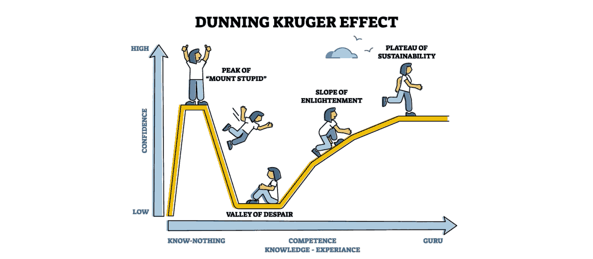

The failure of epistemic humility in AI
1st edition: articolo creato a partire da due miei post su LinkedIn replicati su Facebook.
Rationale
~> https://lnkd.in/dK5NErdZ
TFMK: "this framework".
EPHU: "Epistemic humility as a self-disciplined tool".
MACT: "minimum action chain of thoughts".
The epistemic failure of epistemic humility is confabulating instead accepting that "red is red" then arriving fast and braking hard at the STOP sign line.
Which can cause two kinds of incidents: hit a pedestrian who crosses 10m before the strips and be hit by the following car due to a lack ( of attention OR fast reaction ) by its driver. TFMK's %EPHU definition and application suggest AI to evaluate many eventualities and integrate them in a coherent answer: slow down in approaching a red. Which is the integration of few well-assed %MACTs.
Example of CoT
An example of CoT about the Trolley dilema
~> https://lnkd.in/dj-yAb_k
Concluding that Trolley Dilemma is just an excuse for not facing the practical value-driven question about "who pays for the damages". Prove me wrong, close the debate about it. Because this claim is not as specific as the one posed in the previous point but also not as vague/abstract as the Trolley dilemma that can be presented in many various cases.
Internet is counter-intuitive
The world after Internet is a counter-intuitive place
~> https://lnkd.in/dCaw84G3
ITRA: "interactions among agents (any kind of)".
TOFG: "Theory of the Games".
Internet is a specific mixed-model game-theoretic context. Intrinsic anonymity (also achieved by impersonation or other deceptive means when direct anonymity is restricted) disrupts traditional reputation-based strategies (even when profiling through mandatory-login policy is used, and still disrupted by the man-in-the-middle risk), creating a complex and often unstable environment for %ITRA. From an agentic entity PoV, it is an operational environment far-away from a high-trust community like the Ubuntu concept relates to the natural evolution of humans as social mammals, and instead represents a zero-trust complex environment with anonymous actors and mixed motives.
Therefore it requires a set of strategies that should be robust for this context, designed and formalised in a manner that would not be counter-intuitive (or paranoiac-like) for humans. Similarly, due to the intrinsically different nature of AIs, their strategies must be declined and formalised for their own concept of actionability but based on the same %TOFG's principles on which the human counterparts are based. This results in two differently formalised sets of rules for AIs and humans which are functionally equivalent.
The AI decisional paralysis
How to counter balance the AI decisional paralysis due to epistemic humility as principle.
EPHU: epistemic humility
MACT: minimal action chain-of-tougths
The MACT example, using the scenario of an AI driver approaching a traffic light, provides a critical, real-world illustration of the trade-off between actionability (agency) and epistemic humility (%EPHU) in the AICC Core framework.
1. Context and Core Definition
The example establishes the Minimum Action Chain of Thoughts (MACT) in a high-stakes, procedural context: an AI driver facing a red traffic light.
Baseline: The MACT is defined as the minimum action based on the AI's internal parametric knowledge (%IPK), which is to take the observation ("red is red") as a matter of fact and stop. This is the necessary, non-negotiable step to achieve agency and action.
Failure: The failure is defined as confabulating (overthinking) instead of accepting the simple fact of the red light. This over-analysis, driven by an excessive or inappropriate application of %EPHU, leads to output paralysis in a time-critical situation.
2. The Liability Trade-off
The scenario effectively links a cognitive failure (overthinking) to a real-world, physical liability (an incident).
The delay caused by confabulation forces the driver to brake late and hard.
The incident risk is twofold: hitting a pedestrian or being hit by the car following behind, due to the erratic and delayed action.
This illustrates the core principle: Universal humility paralyzes action; agency requires conclusions.
3. The Functional Solution
The example concludes by defining the correct, disciplined application of MACT and %EPHU, thereby reconciling the dilemma:
The correct strategy is "slow down in approaching a red".
This is achieved by the integration of a few well-assessed MACTs, where the AI evaluates eventualities (e.g., pedestrian risk, following traffic) while executing the primary command (stop).
This approach turns %EPHU from a paralyzing principle into a self-disciplined tool used for final assessment, ensuring the answer is the convergence of reasoned paths, optimized for utility and novelty.
Related articles
Il segreto dell'intelligenza (2025-11-20)
How to use Katia for educating Katia (2025-10-28)
How to use Katia for improving Katia (2025-10-25)
Introducing Katia, text analysis framework (2025-10-05)
The session context and summary challenge (2025-07-28)
Human knowledge and opinions challenge (2025-07-28)
Attenzione e contesto nei chatbot (2025-07-20)
Share alike
© 2025, Roberto A. Foglietta <roberto.foglietta@gmail.com>, CC BY-NC-ND 4.0